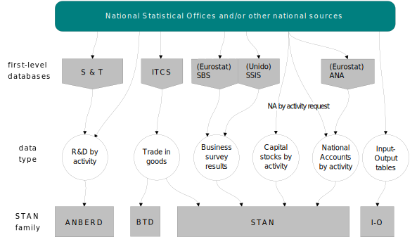

Data sources and links with other OECD databases
Principal data sources
In general, STAN attempts to combine the perceived comparability of National Accounts and the detail of annual industrial surveys to provide a comprehensive data set for analytical use.
Annual National Accounts
STAN is primarily based on Annual National Accounts by activity tables. Member countries officially submit SNA93 data for inclusion in OECD’s Annual National Accounts database (ANA) via a joint OECD/Eurostat questionnaire. As the request covers all aspects of National Accounts, activity detail is only requested at fairly aggregate levels (currently 64 ISIC Rev.4 / NACE Rev.2 activities, the “A64” list). Member economies not covered by Eurostat receive the request directly from the OECD Statistics Directorate asking for as much activity detail as possible for as many variables as possible. This information is particularly important for countries where published data is problematic to harmonize with sector definitions in ISIC Rev.4, often public sector aggregates Public Administration and Defence; Compulsory Social Security (84), Education (85) and Human Health and Social Work Activities (86).
National Accounts are an attempt to provide balanced accounts to describe a nation’s economy (usually according to international standards such as SNA93). The contents of most tables are not directly measured but are compiled from a wide range of data sources with adjustments and estimations made by national experts. For activity data, much use is made of information from annual industrial surveys and/or censuses and short-term indicators of industrial activity (see below) as well as labour force surveys, business registers, income surveys and input-output tables. National Accounts are traditionally considered more internationally comparable than industrial survey data.
Annual Survey Data
Most countries carry out annual industrial (or business) surveys, many supplementing them with less frequent censuses. In the past, these have been mainly concentrated on the Mining, Manufacturing and Construction sectors. However in recent years, many countries have established comprehensive surveys covering service sectors. The OECD collects such data via a joint OECD/UNIDO questionnaire and publishes them as Structural Statistics on Industry and Services (SSIS). It contains industry data at a very detailed level (4-digit) of ISIC, for a wide range of variables and has recently been expanded to include services. SSIS can be very useful for analysis and indicator development at a very detailed level of ISIC within countries. However, because of differing survey practices across countries (see section on National Account Surveys) it has often been perceived to have limited international comparability. STAN uses data present in SSIS, or detailed enterprise statistics from Eurostat’s Structural Business Statistics (SBS) database, to make estimates for detailed sectors not available in National Accounts. Volume and price data are generally not available from annual industrial surveys.
Differences between National Accounts and Annual Industrial Surveys
- Coverage - industrial surveys typically cover establishments and/or enterprises above a certain size limit (with more than a certain number of employees or with a turnover above a certain level). Thresholds vary across countries. Some countries perform further adjustments, for example, (i) for years when full censuses are not performed, survey results may be adjusted upwards based on the last census (ii) the surveys may be supplemented with information from business registers or other sources to cover small firms. Establishments with no employees are generally not covered. Also, manufacturing surveys based on establishments often do not include other establishments in the same enterprise such as head offices, R&D and transport divisions. Where an establishment/enterprise performs activities that cover more than one ISIC sector, it is allocated to ISIC according to its primary activity (typically determined by Value Added Contribution). In National Accounts, attempts are made to get a more complete picture of industrial activity consistent with other SNA93 accounts (e.g. expenditure GDP) through use of data coming from a variety of alternative sources. For example, National Accounts includes adjustments for the non-observed economy such as underground production and the informal sector - mainly unincorporated household enterprises (see ).
- In view of the above, Employment figures for a particular industry are typically lower in SSIS than in National Accounts where labour force surveys may be used to determine employment for the total and broad activities.
- Value Added from manufacturing surveys can be greater than that on a National Accounts basis since at an establishment level only materials and energy are recorded as intermediate inputs - it is difficult to determine costs of services such as finance, transport, IT and communications, usually known at the enterprise level. Also, Valuation of Value Added measured in surveys may differ from that shown in National Accounts. If surveys have good coverage, Production can match that given in National Accounts quite closely.
International Trade in Commodities Statistics
First estimates of exports and imports at current prices in STAN are derived from detailed trade from OECD’s International Trade in Commodities Statistics (ITCS) database. A standard conversion from the product-based classification Harmonised System Rev.1 (HS1) to ISIC Rev.4 is used (details of the conversion key used can be accessed on the BTDIxE homepage). This conversion regime provides estimates by industry from 1988. For earlier years, old STAN ISIC Rev.2 estimates (converted from SITC Rev.2) are linked after being approximately mapped to ISIC Rev.4.
Old SNA68/ISIC Rev.2 databases as sources
When making estimates in STAN, useful sources of data are the last published ISIC Rev.3 versions of STAN containing converted information from STAN in ISIC Rev.2, ISDB and OECD Annual National Accounts (ANA). Since the introduction of SNA93, some countries (particularly in Europe) have only provided revised National Accounts back to the mid-1990s. The old SNA68/ISIC Rev.2 databases was used to estimate historical data in STAN ISIC Rev.3, particularly for aggregate sectors. Also, ISIC Rev.4 survey data (in SSIS) are only available from 2008 while data in ISIC Rev.3 is available from the mid-1990s for nearly all countries. In many cases, data from the 2005 (ISIC Rev.3) version of STAN are used to estimate more detail after first converting them to ISIC Rev.4 using the approximate correspondence shown in INSERT LINK.
Databases linked to STAN - the STAN family
The table below gives an overview of data available from the STAN and related databases. A standardized industry list facilitates the creation of indicators for structural analysis covering R&D expenditures, international trade as well as detailed economic interdependencies covered by input-output tables.
R&D expenditure by industry
The Analytical Business Enterprise Research and Development (ANBERD) database is an estimated database constructed with the objective of creating a consistent data set of R&D expenditures which attempts to overcome problems of international comparability and time discontinuity associated with the official business enterprise R&D data provided to the OECD by its Member countries. The ISIC Rev.3 version of ANBERD contains R&D expenditures from 1987 for 19 OECD countries using an industry list consistent with STAN ISIC Rev.3. An ISIC Rev.4 database of ANBERD is currently under development with information for most recent years.
Bilateral trade by industry
The Bilateral Trade Database by Industry and End-Use (BTDIxE) includes detailed trade flows by manufacturing industry and end-use category between OECD declaring countries and a selection of partner countries and geographical regions. As with STAN, data are derived from ITCS by means of a standard conversion key. The latest version covers the period 1988-2010 and currently uses an ISIC Rev.3 industry list consistent with STAN covering about 40 detailed and aggregate goods-producing activities (mainly manufactures).
Input-Output
OECD’s Input-Output database presents the flows between the sales and purchases (final and intermediate) of industry outputs. The latest set of OECD Input-Output tables consists of matrices of inter-industrial transaction flows of goods and services (domestically produced and imported) in current prices, for all OECD countries and fifteen non-member countries, covering the periods mid-1990s, early-2000s and mid-2000s. The tables are based on an ISIC Rev.3 industry list consistent with the STAN database.

Inconsistencies across OECD industrial data sets
The notes above describe other data sets that contain the same variables as STAN according to industrial activity. When comparing different published OECD data sets, users may find significant differences in data that they may expect to be similar. The reasons for these apparent inconsistencies include:
- Sources and methods. For the reasons outlined above, industrial survey data (such as Value Added and employment), even at aggregate levels of activity can differ significantly from National Accounts data;
- Timeliness. Data in STAN may differ from that published in OECD’s National Accounts of OECD countries (ANA) because of the timing of updates. Activity tables in ANA are just part of a whole range of accounts and the updates may occur at a different time than STAN which attempts to follow the rhythm of countries’ releases of National Accounts activity-based tables (some countries release them in Spring while others towards the end of the year). It is worth noting that official revisions of National Accounts can extend back many years;
- Context. Data at the aggregate level in STAN (e.g. for Value Added, Employment and Investment) may not match the latest aggregate data published by member countries. Many countries publish aggregate data some months ahead of more detailed activity data. The emphasis of STAN is to make use of the latest consistent National Accounts by activity tables rather than the latest aggregate figures.